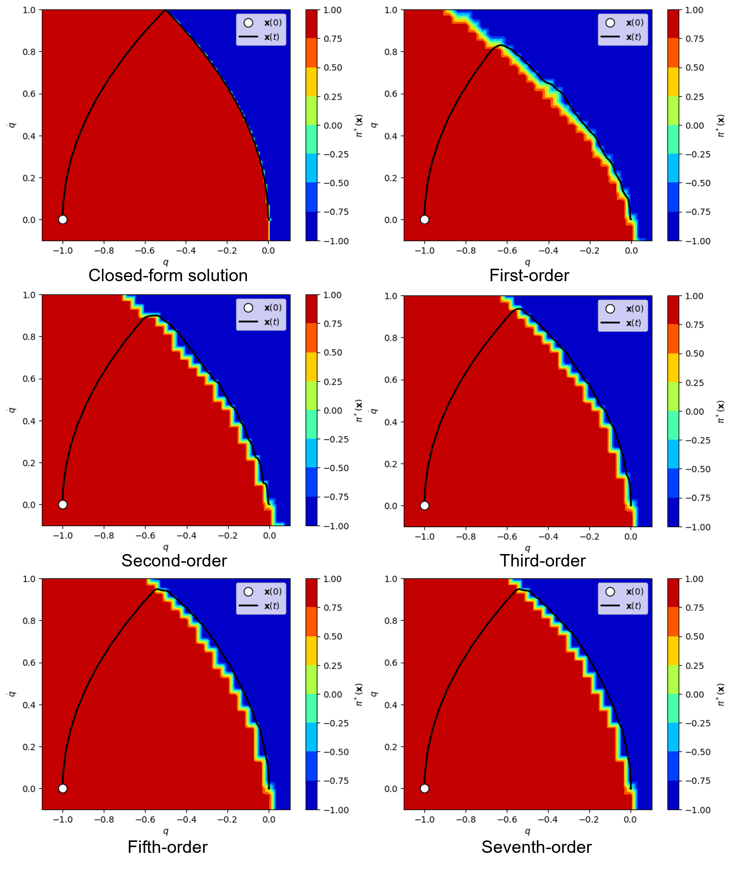
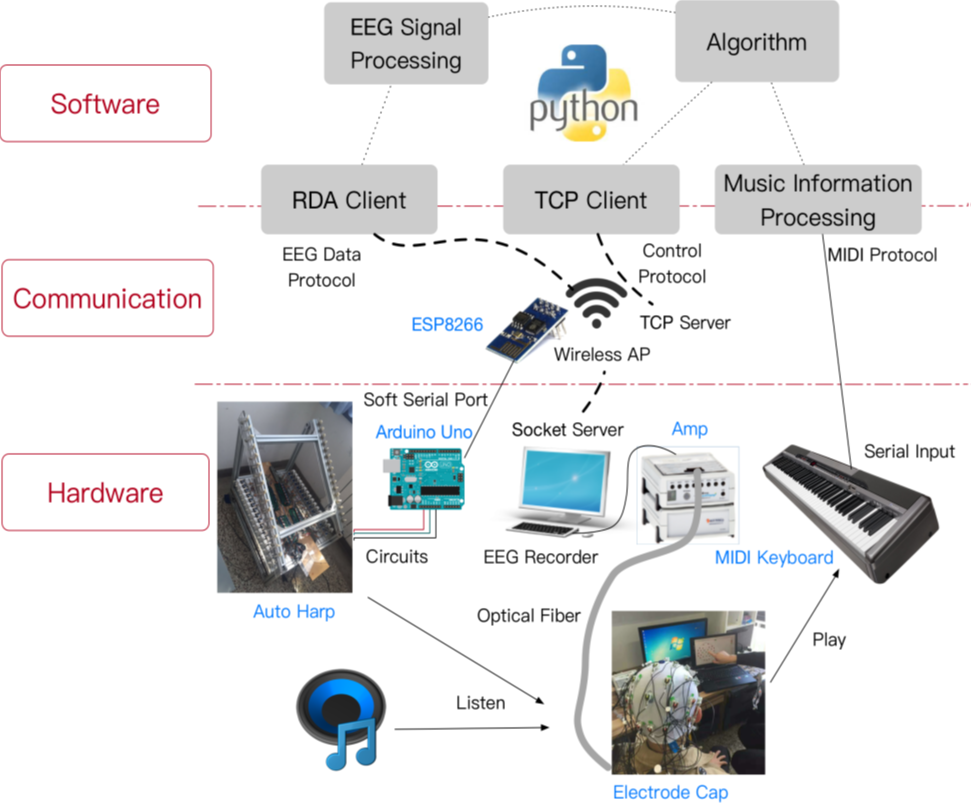

Projects

Upwind Value Iteration on HJB Equations with Discontinuous Cost Functions
Explores upwind and ENO (essentially non-oscillatory) finite difference schemes for solving Hamilton-Jacobi-Bellman equations in dynamic programming. High-order upwind schemes better capture discontinuities and kinks; upwind ENO schemes suppress non-physical oscillation.
[report]

Multi-finger Grasping: Generating Antipodal Grasping with Allegro Hand
Generating antipodal grasps for a multi-finger Allegro Hand using grasp planning and real-robot execution.
[video]

Compliant Egg Gripper
A hand-held, compliant, laser-cut acrylic gripper that firmly picks up raw eggs and is impervious to disturbances such as shaking and impacts. Designed for average grip strength with no plastic deformation after repeated use.

Passive Sit-to-Stand Assistive Device
A cam mechanism that stores energy when the user sits down and passively assists them as they stand back up, reducing joint load for users with limited lower-body strength.

Music Factory: Harp Robot & Human-Machine Interaction
A 32-channel automatic harp robot with a layered modular framework integrating hardware and software for real-time control and machine learning algorithms for human-machine collaborative music performance.